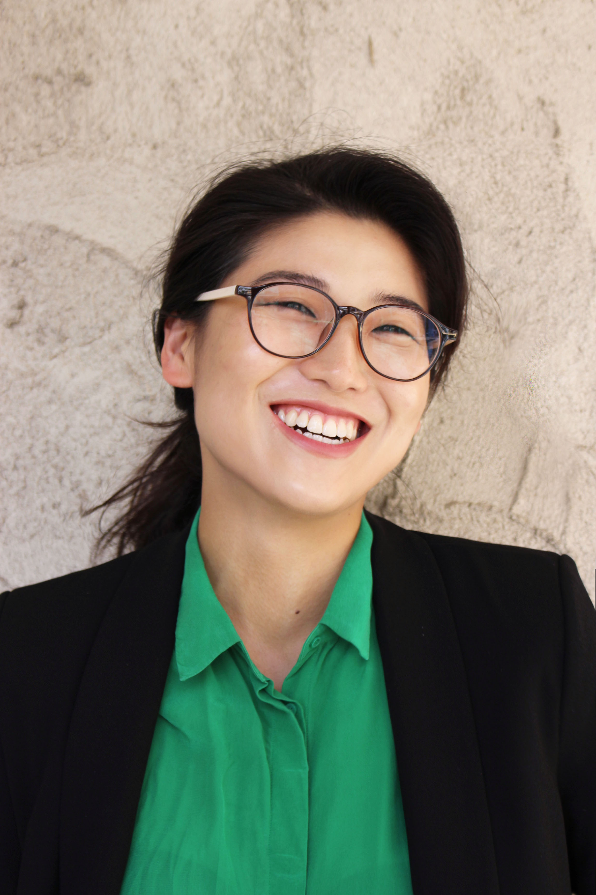

About
I am a mixed-method social scientist specializing in the
intersection of gender, trust, and technology.

I am a PhD Candidate at the Oxford Internet Institute
where I study how data-driven and automated reporting
systems for sexual harassment reconfigure the ecosystem
of campus safety in US higher education. I employ
ethnographic methods with interface analysis to uncover
the social, political, and ethical implications of
using emerging technologies to govern sexual conduct.
When not dissertating, I am a Senior Researcher at Edgeryders.
I design and lead a digital ethnography project that draws from
participants' experiences with emerging technologies to inform
policies for a more democratic, open, and trustworthy Internet.
We use the semantic social network analysis (SSNA) to code, analyze,
and visualize ethnographitc data. This research is a part of the
European Commission's
Next Genderation Internet (NGI) Forward
project.
Elsewhere, I examine AI/algorithmic accountability in public life,
including ethical and practical scopes for predictive risk
assessment tools for child protection services in the UK
and the use of AI systems during COVID-19.
Prior to research, I have nearly a decade of experience
in community organizing, survivor advocacy, and qualitative
research in US, UK, and South Korea. I am incredibly proud
to have been a part of youth- and survivor-led campaigns like
Know Your IX and
Our Harvard Can Do Better to demand a safer
and more just campus. The lessons in community building,
transformative justice, and solidarity continue
to inform my work.
I hold a MSc in social science of the Internet
from the Oxford Internet Institute and a BA in
gender and sexuality studies from Harvard.